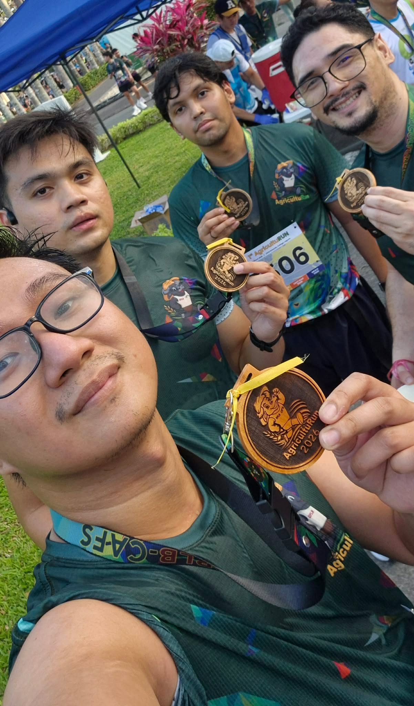
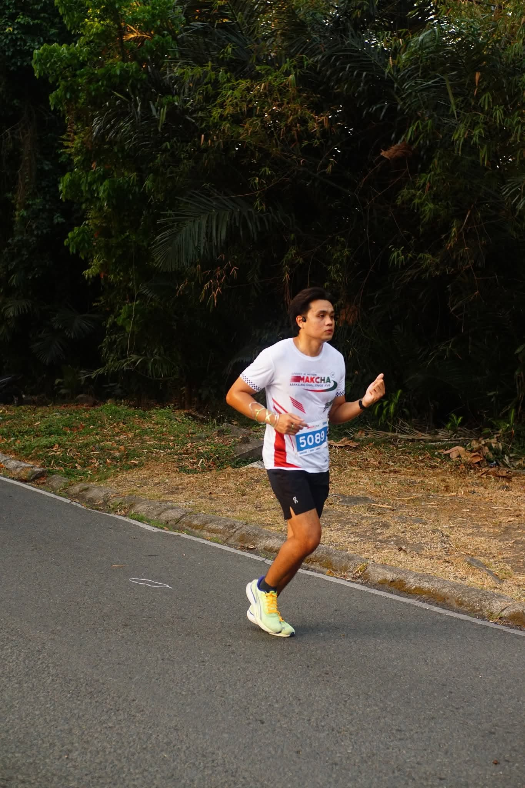
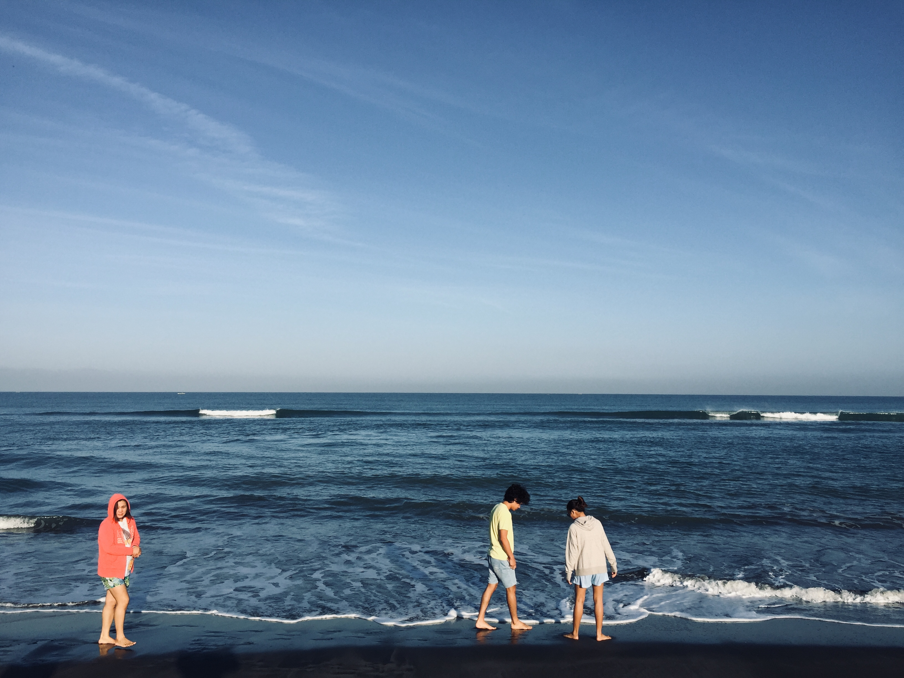

About me
Hello! You can call me Marko. I am a 2nd year AADDA student here in the University of the Philippines Open University or UPOU.
I chose to learn about multimedia mainly because I love making music, though I also want to expand into other forms of multimedia so I can create the different types of art I envision. I am new to digital design and video editing and excited to learn more. I like jogging or running whenever I have free time, though most of it is usually spent making music in my room, cooking, or catching up on chores I didn't have time for during workdays. I hope you enjoy my page—this is all new to me, and I just want to say that I've loved building it, even through the brain-melting journey of tracking down where my code went wrong.


Passion Projects
I Love Making Music.
Music has always been one of my favorite things to do, ever since I was a child. I think my love for it came from my dad, who always played music around the house—especially on weekends when everyone was home resting. Music became a part of our home. I never really stopped to think about why I was intrigued or what drew me to it, but it was enough to inspire me to learn the guitar. Over the years, I've built up enough skills to start creating my own tracks. Now, I'm excited to share a few of the songs I've made with you.

Beach
I made this song during our vacationn in Sorsogon. I remember making this under the sun with my ipad and MIDI keyboard while my family was swimming in the ocean. I don't remember much about how I came up with the sound, but I do remember what it felt like.

Sabi
I remember I came up with this song while watching the movie Vanilla Sky. It doesn't have anything to do with the movie but the movie did gave me the idea for a song to be about wanting to say something but always end up holding back.
I made this song during summer hence the title. Summer is my favorite season even though it is really hot especially the type summer we experience now. In this song I wanted to share to the audience how I feel about someone when I really like them.
- RHCP
- Gojira
- Parcels
-
 Own Music
Own Music